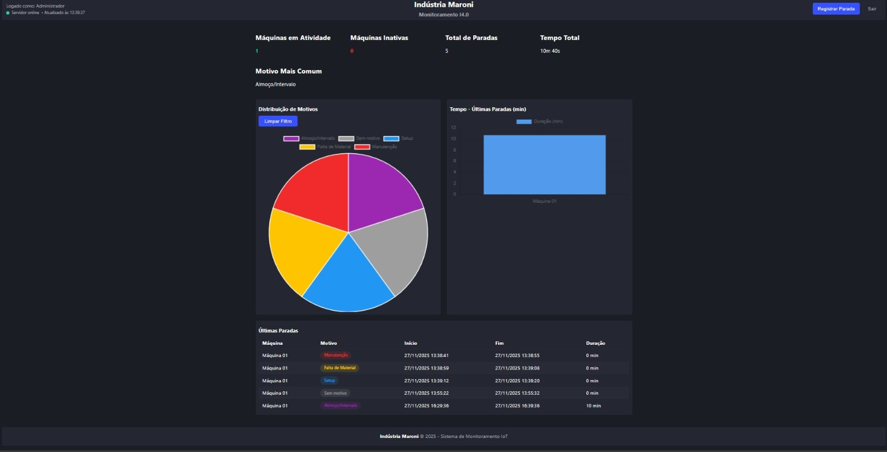

Desenvolvimento
JavaScriptTypeScriptReactReact NativeExpo
Node.jsAPI RESTHTMLCSS
Desenvolvo sistemas personalizados, SaaS, dashboards e soluções tecnológicas com foco em operação real, integrando software, dados, indústria e processos empresariais. Também atuo pela NeonDev Soluções em Tecnologia.
Processos • Integrações
Web • API • Mobile
. Disponível para sistemas personalizados, automação e projetos sob medida
Atuo como Analista de TI e Desenvolvedor Full Stack, construindo soluções que funcionam na operação real.
Desenvolvo sistemas personalizados, SaaS, dashboards e aplicações web, mobile e API, desde o levantamento de requisitos até a evolução contínua do produto.
Trago vivência prática em chão de fábrica, processos empresariais, indicadores operacionais, integrações e rotinas fiscal/contábil.
Meu foco é entregar soluções com clareza técnica, padronização, menos retrabalho e mais controle para a tomada de decisão.
Belém do Pará, Brasil
Disponível para projetos e oportunidades

Analista de TI • Desenvolvedor Full Stack • Belém/PA
Sou Douglas Lobato, Analista de TI e Desenvolvedor Full Stack, com atuação prática em indústria, sistemas internos, automação e dados.
Minha especialidade é transformar processos operacionais em software útil: construo sistemas personalizados e SaaS que organizam rotinas, reduzem falhas e aumentam a visibilidade da gestão em tempo real.
Uno tecnologia, processo e negócio, trabalhando com foco em produtividade, rastreabilidade, integração e apoio à decisão.
Como eu trabalho:
# Levantamento e mapeamento claro do processo
# Entrega incremental com MVP e evolução contínua
# Padrão técnico, manutenção e performance
# Foco em resultado, clareza e aplicabilidade real
NeonDev Soluções em Tecnologia
Atuo também pela NeonDev, voltada à construção de soluções sob medida para empresas.
Frentes principais:
# Sistemas Web, APIs, integrações, banco de dados e SaaS
# Apps com React Native / Expo, UI/UX e performance
# Automação e IoT, dashboards, rastreabilidade e operação industrial
# Fiscal/Contábil, validações, relatórios e consistência de processo
# Infraestrutura, CFTV, IP/PoE/NVR, rede e acesso remoto
Próximo passo: evolução contínua na área de engenharia e desenvolvimento de software.
SKILLS
PROJETOS
Projetos que conectam indústria, software, dados, processos e entregas aplicadas ao mundo real.

Sistema para registro e monitoramento de paradas de máquinas em tempo real, com coleta via IoT, API backend, banco de dados e dashboard operacional.

Estruturação de ERP com foco em PCP, manufatura, controle operacional, cadastros, processos internos e integração com a rotina produtiva.

Aplicativo mobile com catálogo e estrutura pronta para evolução comercial, com base sólida para módulos como pedidos, estoque e gestão.

Aplicativo voltado a cálculo comercial e fiscal, com foco em lucro, margem, ICMS, DIFAL, exportação em PDF e apoio ao processo de decisão.

Estrutura de produto SaaS com autenticação, permissões, dashboards, módulos por assinatura e arquitetura voltada à escalabilidade.

Padronização de processos, validações e relatórios com foco em consistência, rastreabilidade e apoio à auditoria operacional.
SERVIÇOS
Construção sob medida para sua operação, com regras de negócio, integrações, usuários, permissões e relatórios.
Arquitetura SaaS com login, planos, multiempresa, módulos e evolução contínua do produto.
Automação, apontamentos, indicadores e rotinas que funcionam no dia a dia da produção.
Padronização de rotinas, validações e relatórios para reduzir erros e aumentar consistência operacional.
Aplicativos com interface moderna, fluxo sólido e integração com APIs e sistemas corporativos.
Projetos e implantação de CFTV com IP, PoE, NVR, cabeamento, configuração e acesso remoto seguro.
Se você precisa de um sistema sob medida, automação de processos, dashboards operacionais, app mobile ou estruturação tecnológica para sua empresa, vamos conversar.